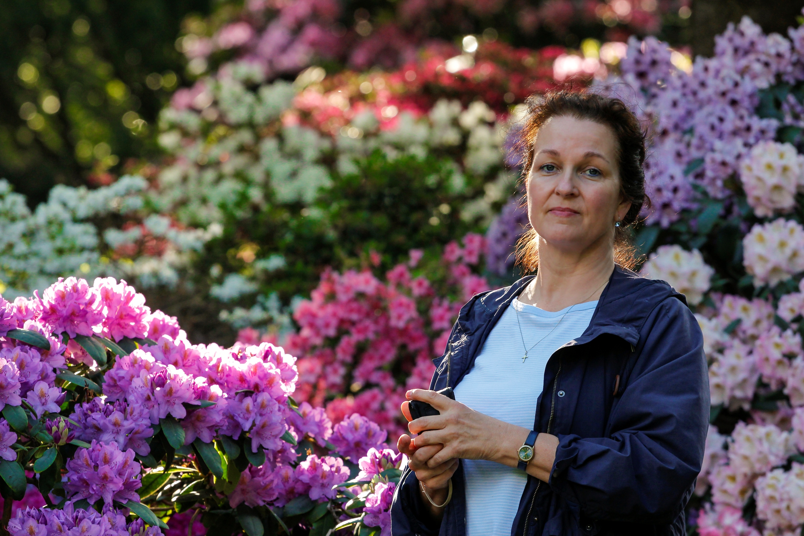
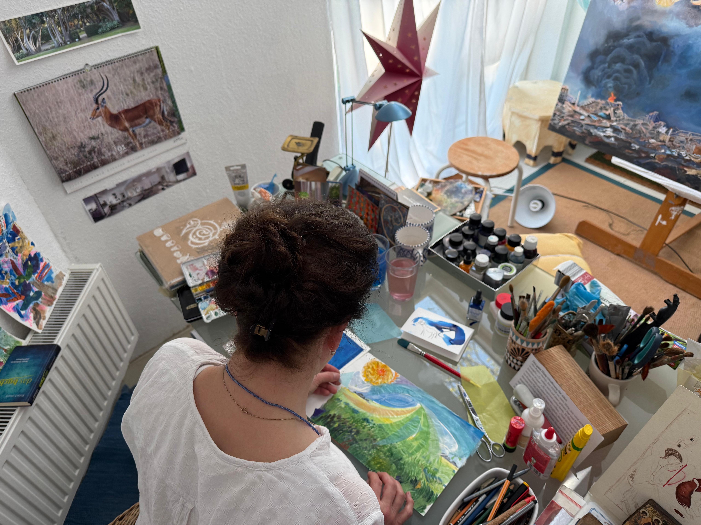

Vita / Kontakt


Vita
- 1960
- Geboren in Berlin.
- 1979-82
- Ausbildung Physiotherapie.
- 1983
- Arbeit in Israel.
- 1985-1990
- Studium der Freien Kunst an der Muthesius-FHS für Gestaltung in Kiel bei Prof. Fritz Bauer, Grafik.
- 1991-2000
- Aufenthalt in San José und Sta Cruz in Californien, USA. Hinwendung zur Malerei.
- Seit 2000
- Wohnhaft in Kiel Altenholz. Buchillustrationen.
- Seit 2022
- Mitglied des BBK Landesverbandes Schleswig-Holstein.
Einzelausstellungen / Veröffentlichungen
- 1990
- Lithografien zum Thema „Altäre“, Nikolaikirche Kiel.
- 1991
- Seidenmalereien, Wanderausstellung zum ‚Jahr der Bibel‘.
- 1993
- "You have made known to me the path of life", Galery Sanctuary for the Arts, San José.
- 1994-2000
- Glasmalereien.
- 2007
- Illustration Gedichtband zur Stadtgeschichte Bad Segebergs.
Gemeinschaftsausstellungen
- 2011-2015
- Illustrationen „Im Jahreskreis“ Buchreihe Bd I-III.
- 2021
- "Das geheime Leben der Dinge und Orte", Kieler Kloster.
- 2022
- "Zeteo", Kieler Kloster.
Kontakt
- juliane.krantz@t-online.de
- Tel
- +4915776482874